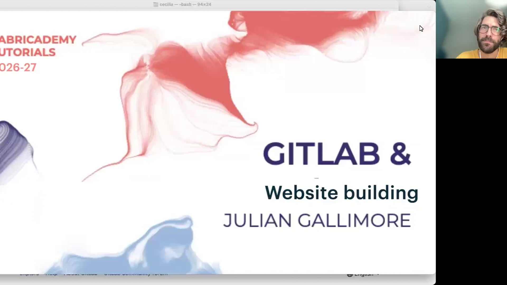
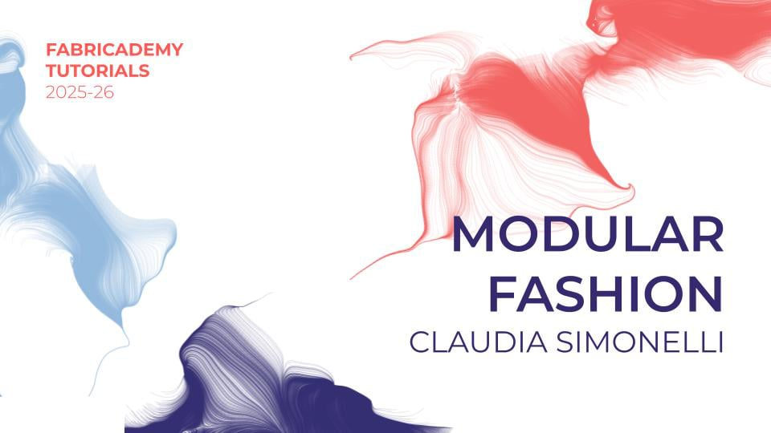
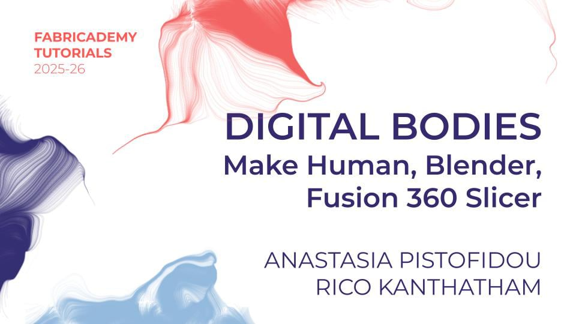
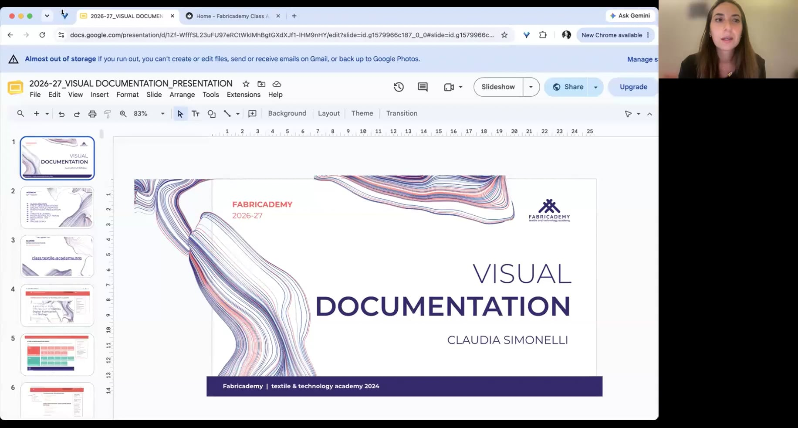

Fabricademy 课程笔记
按课程内容整理的中文学习笔记，包含本章摘要、原文字幕、视频截图和个人笔记。

Fabricademy 第十期 · 文档化与个人网站
14 个主题章节
最早整理的开篇课程：课程平台、Git 版本控制、Markdown、网站配置与发布，以及图片优化。

模块化时装：从参数化绘图到连接与组装
15 个主题章节
Fabricademy Modular Fashion 教程中文笔记，按实际演示整理 Fusion、Rhino、矢量文件输出与模块连接测试。

数字身体：MakeHuman、Blender 与切片制造
25 个主题章节
Fabricademy Digital Bodies 教程：从人体网格、Blender 编辑与建模，到切片、排料和装配测试。保留现场失败演示与必要纠错。

视觉文档化：案例、素材与媒体制作
16 个主题章节
Fabricademy 2026-09-16 视觉文档化课程 AI 笔记：按实际内容梳理资源、图文表达、署名许可、媒体归档、图片压缩与拍摄方法。